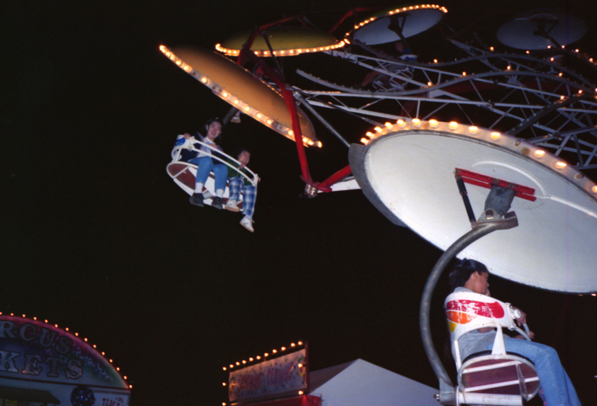
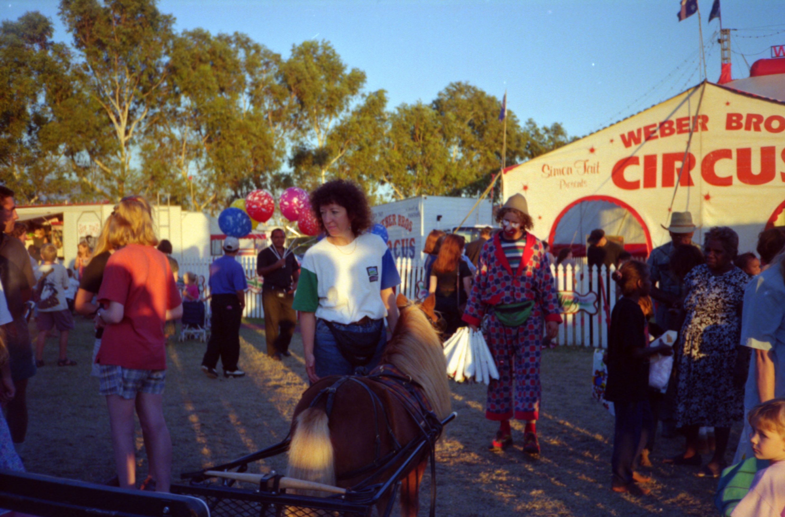

 遊園地にスリリングな乗り物があるが、移動する関係でどうしても小型になる。それをカバーするよ うに、速度は速い。外で見ていると目が回りそうでとても乗る気にはなれない。他には電気自動車のゴーカートやコ ーヒーカップ等があった。しかしながら、赴任して間もなくだった頃はそれ程興奮はしなかったが、３年にもなる と興奮するようになってしまった。普段がいかに何もないかが分かるひと時です。 サーカスは団員が少なく、演技が終わるとテントの前で切符を売ったり、飲食物を売ったりして忙しそうにしてい る。中には出番だといって慌てている団員もいたりする。演技もそれなりに十分楽しませてくれた、たぶん内容的に は日本人から見れば稚拙で見るに耐えないかもしれないが、これも何もない所に長年いると見方が変わってしまい楽 しいものであった。ある日、３Ｄなるものが来た。３Ｄとは立体映像の事かなと推測し家族で見に行った。概観はプラネタリウムを思 わせる丸いドームである、材質は布に見えた。中に入ってみると、地面の上に直接ドームが乗っている。我々は芝生 の上に立って見ることになった。ファンが忙しく回って中に空気を入れている、この空気の力でドームが丸く膨らん でいるのがわかった。観客は我々家族４人と少女たち３人くらいだけである。 何が始まるのかと思ったらこのドーム内面全てに映像が映し出された。軽飛行機で空を飛びながら景色を眺める感じ である。最後にジェットコースターの最前列で撮影した映像が出てきた、それなり自分がジェットコースターに乗っ ている気分を味わせてくれた。 こんな子供騙しでもつい喜ぶようになってしまった。 ２００１年１１月２５日 記
|